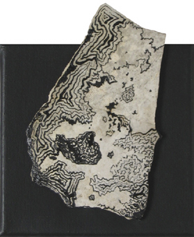
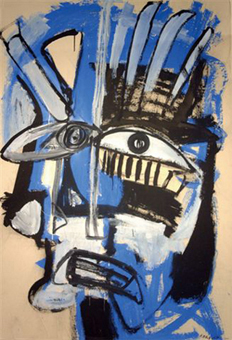
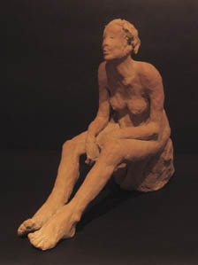
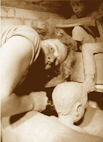

aux conpromis , ce qui demande d'être au plus proche de soi-même
, du bon ou du mauvais côté , mais c'est pas gagné. Je peux
me sentir proche de l'art singulier parce qu'il prône la spontanéité,
l'affect, l'humour et le non-conformisme et qu'il est comme un souffle vivant
qui balaie nos concepts sur pas mal de choses. Je travaille plutôt dans
la rapidité, voire dans l'urgence et cette énergie ne m'appartient
pas . Par contre si le geste est fougeux et direct, le regard, lui, est très
contemplatif, lié à ma nécessité de solitude."
KAROLINDA
Ancien Prieuré Trébaïx 46090 Villesèque
05 65 31 19 98 - karolinda@quinze-donadieu.org
http://perso.quinze-donadieu.org/karolinda

"Après 5 années passées
à explorer le thème du jardin, j’ai commencé une
nouvelle série intitulée « les écorces du temps
».
J’ai choisi les arbres, et plus particulièrement leur tronc, comme
images de nous-mêmes, cette part dressée qui garde les traces
du temps sans l'illusion des saisons.
"A travers mes sculptures, c'est notre quotidien que
je cherche à traduire. Un quotidien chargé de toutes ses ambiguÏtés,
balançant entre humour et tragédie, tendresse et poésie;
la grande histoire de la vie faite de toutes les petites histoires de la vie.
Scènes de vie, sculptures narratives : pour cette exposition "Petites
Oeuvres", avec Françoise et Karolinda, je présente des croquis
de terre, des personnages saisis sur le vif, des sortes de "photographies
instantanées" qui tentent d'intégrer trois dimensions qui
me sont essentielles : l'humain, le quotidien et l'universel."
LAURE GAUDEBERT
Le Communal 46330 CABRERET
05 65 21 45 40 laure.gaudebert@quinze-donadieu.org
www.lauregaudebert-sculptures.com
MAI 2007
vendredi 11
16 h - 19 h
samedi et
dimanche
10 h à 19 h


"Comment exprimer mon ressenti par rapport
à la peinture? Dès qu'on se définit , c'est déjà
la prison. Le moteur essentiel serait donc de revendiquer une liberté
de création sans devoir prêter allégeance aux modes et
le moins possible
Je me suis imposé de travailler
sur l'idée que la couche visible d’un tableau n’est pas la
plus importante et de raréfier ma palette colorée.
Cette limitation des moyens m'a entraîné à explorer les
termes d'une calligraphie qui puisse traduire la forme d'un échange
entre le langage fossile de la pierre et les cheminements de ma propre écriture."
FRANçOISE
UTREL
15 rue Donadieu 46000 CAHORS
05 65 21 14 47 - utrel@utrel.org
www.utrel.org
PETITES
OEUVRES ORIGINALES
de 15 à 150 euros au Garage Donadieu